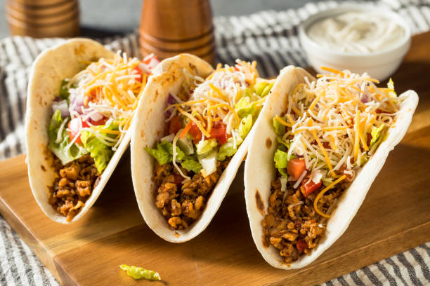

The Tacos
Home

Description
The lasagna recipe
:p
ingredients
- 16 whole Taco Shells
- 2 lb. Ground Beef
- 3 Tbsp. Taco Seasoning
- 1 can (4 Ounce) Tomato Paste
- Salt To Taste
- 1 can (14.5 Ounce) Beans (kidney, Pinto, Chili), Undrained
- 1/2 cup Hot Water
- 1 head Green Leaf Lettuce, Sliced Very Thin
- 1 cup Grape Tomatoes, Halved (or Diced Regular Tomatoes)
- 1 cup Grated Cheese (cheddar, Jack, Or Cheddar/jack)
- dressing
Directions
- Heat taco shells according to package directions. Set aside.
- Brown ground beef until fully cooked. Drain excess fat, then add taco seasoning, tomato paste, beans, and hot water. Stir to combine, then add salt as needed. Keep warm.
- To make the dressing, mix together the mayonnaise, sour cream, salsa, ranch mix, and hot sauce. Taste and adjust seasoning, adding salt and pepper if it needs it.
- To build the tacos, first fill the shell with plenty of lettuce. Spoon on the meat mixture, then add tomatoes and cheese. Top with a light drizzle of dressing and serve immediately!
- TOptional: Add a little dressing on top of the lettuce before adding the meat.